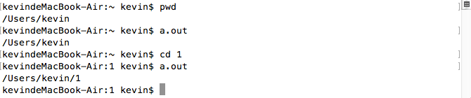

apue pwd命令实现
这篇文章发布于 2016/10/20，归类于 C与APUE
标签：
apue笔记，pwd实现，ls -l实现，mkdir -p实现
了解了文件目录相关的系统调用后，就可以尝试模拟实现各种shell命令了。这里给出了ls -l的完成代码，加上pwd及mkdir -p的实现。里面用到了递归，也涉及到一些细节问题，如根目录的上一级目录还是根目录，chdir需要用户有目录的执行权限。

pwd命令的实现，显示当前路径
思路: 先获取当前目录的名字，然后chdir到上一级目录，重复..直到根目录
/*
* pwd的实现
* Thu Oct 20 17:48:52 2016
* Create by Kevin Zuo
*/
#include <stdio.h>
#include <stdlib.h>
#include <sys/stat.h>
#include <unistd.h>
#include <dirent.h>
#include <errno.h>
#include <string.h>
void pwd()
{
struct stat buf;
struct stat buf2;
DIR* dirp = opendir("..");
lstat(".", &buf);
lstat("..", &buf2);
if ( buf.st_ino == buf2.st_ino) // 如果当前目录和上一级目录的i节点相同
return;
chdir(".."); // 先递归再打印
pwd();
struct dirent* p;
while(1) {
int err = errno;
p = readdir(dirp);
if (p == NULL && errno != err) { // 错误提示
perror("readdir()");
return;
}
if (p == NULL) break; // 读完退出
if (p->d_fileno == buf.st_ino) { // 找到文件名后结束
printf("/%s", p->d_name);
break;
}
}
int main(int argc, char* argv[])
{
// 如果是在根目录，省略处理...; 某些出错判断，省略...
pwd();
printf("\n");
exit(0);
}
// 运行效果:
// kevindeMacBook-Air:~ kevin$ ./a.out
// /Users/kevin
// kevindeMacBook-Air:~ kevin$ pwd
// /Users/kevin
// kevindeMacBook-Air:~ kevin$ls -l 的完整实现
思路: 遍历当前目录的文件，过滤掉以.开头的文件，以一定格式打印
/*
* ls -l的实现
* Thu Oct 20 19:09:48 2016
* Create by Kevin Zuo
*/
#include <stdio.h>
#include <stdlib.h>
#include <time.h>
#include <sys/stat.h>
#include <dirent.h>
#include <pwd.h>
#include <grp.h>
#include <errno.h>
void print_mode(mode_t mode)
{
//printf("%o ", mode);
switch (mode & S_IFMT) { // 打印文件类型
case S_IFIFO: putchar('p'); break;
case S_IFCHR: putchar('c'); break;
case S_IFDIR: putchar('d'); break;
case S_IFBLK: putchar('b'); break;
case S_IFREG: putchar('-'); break;
case S_IFLNK: putchar('l'); break;
case S_IFSOCK: putchar('s'); break;
}
if (mode & S_IRUSR) putchar('r'); else putchar('-');
if (mode & S_IWUSR) putchar('w'); else putchar('-');
if (mode & S_IXUSR) putchar('x'); else putchar('-');
if (mode & S_IRGRP) putchar('r'); else putchar('-');
if (mode & S_IWGRP) putchar('w'); else putchar('-');
if (mode & S_IXGRP) putchar('x'); else putchar('-');
if (mode & S_IROTH) putchar('r'); else putchar('-');
if (mode & S_IWOTH) putchar('w'); else putchar('-');
if (mode & S_IXOTH) putchar('x'); else putchar('-');
putchar(' ');
}
int main(int argc, char* argv[])
{
DIR* dirp = opendir(".");
struct dirent* p;
while (1) {
int err = errno;
p = readdir(dirp);
if (err != errno && p == NULL) {
perror("readdir()");
return 1;
}
if (p == NULL) break;
if (p->d_name[0] == '.') continue; // 如果是隐藏文件，退出
struct stat buf;
struct passwd* t1;
struct group* t2;
struct tm* t;
lstat(p->d_name, &buf); // 获取当前目录(~)下文件1.c的信息存入变量buf
t1 = getpwuid(buf.st_uid);
t2 = getgrgid(buf.st_gid);
t = localtime(&buf.st_mtime);
print_mode(buf.st_mode); // 打印前面的信息
printf("%2d ", buf.st_nlink); // 文件硬链接数
printf("%s %s ", t1->pw_name, t2->gr_name); // 文件的拥有者及所在用户组
printf("%6lld ", buf.st_size); //文件大小
printf("%2d %2d %02d:%02d ", t->tm_mon+1, t->tm_mday, t->tm_hour, t->tm_min);
printf("%s\n", p->d_name);
}
exit(0);
}
// 运行效果：
// kevindeMacBook-Air:~ kevin$ ./a.out
// drwxr-xr-x 30 kevin staff 1020 10 20 19:19 1
// -rw-r--r-- 1 kevin staff 143 10 17 17:31 1.txt
// -rw-r--r-- 1 kevin staff 144313 10 15 16:27 1015.sql
// -rw-r--r-- 1 kevin staff 143533 10 15 19:07 1015_2.sql
// -rw-r--r-- 1 kevin staff 143 10 17 17:37 5.txt
// -rwxr-xr-x 1 kevin staff 9008 10 20 19:49 a.out
// drwx------ 17 kevin staff 578 10 20 18:56 Desktop
// drwx------ 7 kevin staff 238 10 13 14:46 Documents
// drwx------ 15 kevin staff 510 10 18 15:04 Downloads
// drwx------ 53 kevin staff 1802 8 2 12:21 Library
// -rw-r--r-- 1 kevin staff 2046 10 20 19:49 ls.c
// drwx------ 3 kevin staff 102 6 1 12:08 Movies
// drwx------ 5 kevin staff 170 6 25 15:49 Music
// drwx------ 4 kevin staff 136 10 17 16:00 Pictures
// drwxr-xr-x 5 kevin staff 170 6 1 12:08 Public
// -rw-r--r-- 1 kevin staff 918 10 20 19:28 pwd.c
// kevindeMacBook-Air:~ kevin$ ls -l
// total 632
// drwxr-xr-x 30 kevin staff 1020 10 20 19:19 1
// -rw-r--r-- 1 kevin staff 143 10 17 17:31 1.txt
// -rw-r--r-- 1 kevin staff 144313 10 15 16:27 1015.sql
// -rw-r--r-- 1 kevin staff 143533 10 15 19:07 1015_2.sql
// -rw-r--r-- 1 kevin staff 143 10 17 17:37 5.txt
// drwx------+ 17 kevin staff 578 10 20 18:56 Desktop
// drwx------+ 7 kevin staff 238 10 13 14:46 Documents
// drwx------+ 15 kevin staff 510 10 18 15:04 Downloads
// drwx------@ 53 kevin staff 1802 8 2 12:21 Library
// drwx------+ 3 kevin staff 102 6 1 12:08 Movies
// drwx------+ 5 kevin staff 170 6 25 15:49 Music
// drwx------+ 4 kevin staff 136 10 17 16:00 Pictures
// drwxr-xr-x+ 5 kevin staff 170 6 1 12:08 Public
// -rwxr-xr-x 1 kevin staff 9008 10 20 19:49 a.out
// -rw-r--r-- 1 kevin staff 2046 10 20 19:49 ls.c
// -rw-r--r-- 1 kevin staff 918 10 20 19:28 pwd.c
// kevindeMacBook-Air:~ kevin$这里没有处理l符号链接，有时间可以扩展
mkdir -p 功能模拟
int mkdir(const char *path, mode_t mode); -- make a directory file
int chdir(const char *path); -- change current working directory
In order for a directory to become the current directory, a process must have execute (search) access to the directory.这里可能是为什么文件权限为0644, 而目录的权限是0755的原因(都多了执行权限)
/*
* mkdir -p 模拟
* Thu Oct 20 20:23:01 2016
* Create by Kevin Zuo
*/
#include <stdio.h>
#include <stdlib.h>
#include <unistd.h>
#include <string.h>
#include <sys/stat.h>
int main(int argc, char* argv[])
{
if (argc != 2) { // 通过命令行传参 ./a.out 4/2/3, 乱传参数错误处理部分会忽略
printf("argc error!");
exit(1);
}
if (!access(argv[1], F_OK)) { // 如果该文件已存在
printf("文件已存在!");
exit(2);
}
if (argv[1][0] == '/') // 如果是根目录下
chdir("/");
char* p = strtok(argv[1], "/");
if (mkdir(p, 0755)) { // 根目录下可能会出现权限限制 ./a.out /5
perror("mkdir()");
exit(3);
}
chdir(p);
while (1) { // 循环切分
char* q = strtok(NULL, "/");
if (q == NULL)
break;
if (!access(q, F_OK)) continue;
mkdir(q, 0755);
chdir(q);
}
exit(0);
}